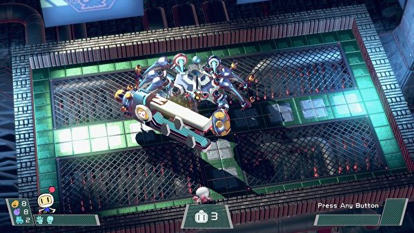

THE LEGEND OF ZELDA: BREATH OF THE WILD
Few gaming moments were as transformative as standing in Hyrule Field in Ocarina of Time, looking up at Death Mountain and realising that, yes, you could get from here to there. In hindsight it wasn’t entirely true - transition screens partitioned the mountain into chunks that wouldn’t choke the N64 - but at the time: whoa. It was a moment so genre-defining that I’m not sure Nintendo ever stepped out of that mountain’s shadow. That’s the curse of rewriting the rulebook - once the ecstasy of innovation has died down, it’s just another template you’re beholden to. Well, Breath of the Wild doesn’t want to play by the rules.
The rulebook isn’t just torn up. It’s crushed beneath boulders, burned in a forest inferno and struck by lightning. Science has arrived in Hyrule, a rush of freeform simulation that brings with it a spark of life that could never quite ignite in the hand-crafted worlds of old. This is a Hyrule where a sudden thunderstorm sees you desperately shed conductive metals before lightning turns you into a baked potato. A Hyrule where trees can be chopped and ridden down rapids as you snipe at unsuspecting goons on the riverbank. A Hyrule where volcanic air ignites the wooden blade in your grip and rain makes your hands slide like warm butter off cliff walls.

But as Hyrule misbehaves, so Link can misbehave in it. Today’s obsession is attaching inflatable octorok guts (think Metal Gear’s Fulton balloons, but way, way grosser) to logs and clinging to the bark as I serenely float over the fields like the old guy in Up. Yesterday was all about trying to bring down helicopter sentries by starting grass fires and heaving bombs skywards by lobbing them into the resulting updraft. Every day I find time to use Link’s metal-lifting magnesis power to pick up metal crates and thwack them into moblins. If luck is on my side there’ll be storm too, turning my giant metal fist into a lightning rod. This is how you get kids into science.
The series has always had something of a fairytale quality to it - its grand landscapes and worlds suggestive of so much more. The sight of dawn over a shimmering lake. The rolling plains of Hyrule Field stretched out beneath you. It speaks to our imaginations, calling us on to adventure. What a familiar feeling to look across Hyrule Field at Death Mountain, wondering what it would be like to climb it. What a profound thrill to make that journey in its entirety. It has taken 18 years, but Nintendo has done it again: this is the adventure game to beat.
Other Reviews
BOMBERMAN R
SNIPPERCLIPS

1-2-SWITCH

SHOVEL KNIGHT: SPECTRE OF TORMENT